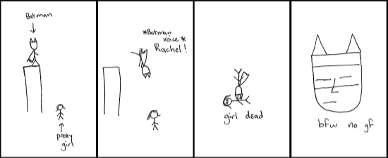

Three Minute Comics

Size matters here, this is a small article, and needs to be bigger!
If you have any more information on this subject, please contact us so that you may send us more information on this subject, and make it bigger, or if you are a member of Hyperlink then update it as soon as you can!
2019-03-05
Three Minute Comic (stylised as "THREE MINUTE COMICS") are a set of three WebComics on Neocities that date back from April 2016. Not much is known about the comics, or even who made them for that matter. The comics seem to be hand-drawn, and then photocopied on to a computer when they were then posted on the Three Minute Comics website.
The site has not been updated since April of 2016.

References
I. Three Minute Comics website
https://3minutecomics.neocities.org/ [Internet Archive]
II. Three Minute Comics dashboard
https://neocities.org/site/3minutecomics [Internet Archive]
This page was last updated: 30/06/2018 @ 13:33
In total this page has had 0 updates since it was uploaded.
★